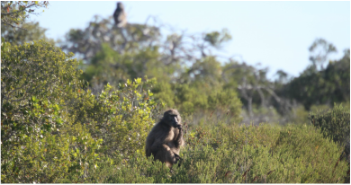
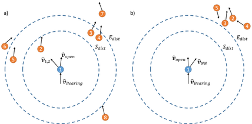
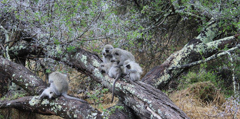
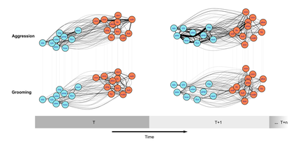
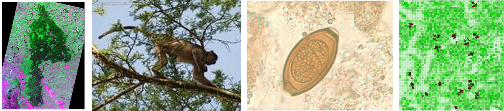
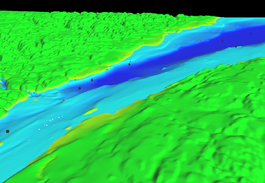
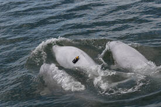

Research Projects


Collective Movement Ecology
Movement and grouping patterns of social animals under changing environments
The recent and rapid developments in geospatial infrastructure — e.g., remote sensing (RS), geographical information systems (GIS), and global positioning systems (GPS) — have transformed our ability to understand the drivers behind the movement and grouping patterns of wildlife. We develop and use this geospatial infrastructure to collect animal movement data, fit statistical movement models, and simulate mobile social networks, providing a means of linking collective movement behaviour to environmental conditions. We use insights from these studies to better understand the implications of landscape alterations, the evolution and development of social structures, and the spread of infectious disease.


Dynamic Social Networks
Evolution, development, and function of social structures
Social wildlife species, such as non-human primates, are ideal study species for understanding how social systems respond to environmental changes. To study these species we develop statistical, machine learning, and simulation-based tools to study dynamic social networks and to test hypotheses about how these networks develop. Insights from developing and applying these tools to social wildlife groups have been used to better understand collective movement and the evolution and function of social structures.

Spatial Epidemiology
Landscapes, host behaviour, and infectious disease
Infectious disease propagation in wildlife is thought to be influenced by landscape structure, host behaviour, and parasite characteristics. These factors, however, are often studied in isolation. We use field data along with geospatial simulation to better understand the interactions between landscapes, hosts, and parasites. In these simulations we combine spatial and behavioural data by integrating agent-based modeling and geographical information systems. Agent-based modeling is ideal for examining complex, interconnected systems that exhibit phenomena like self-organization, emergence, or path dependency, while geographical information systems provide a structured environment for analyzing and representing complex spatial patterns. Their combination lets us examine complex systems in a spatially explicit way, aiming to develop geospatial simulation methodology to better understand landscape–host–parasite systems and to make site-specific predictions.


Social-Ecological Systems
Geospatial simulations of complex adaptive systems
Ecological systems can no longer be considered independent from anthropogenic influences. We are interested in using geospatial simulations to better understand and manage social-ecological systems to mitigate these influences. A prominent current project looks to manage the St. Lawrence Estuary for both cetaceans and marine traffic. A key component of this simulation is estimating noise exposure between ships and cetaceans under alternative traffic scenarios, which requires a good understanding of the collective movement behaviours and habitat use of cetaceans. By using a simulation approach, it is possible to incorporate knowledge from multidisciplinary teams (economists, physicists, ecologists, geographers) both to develop management recommendations and to help guide future research aims.